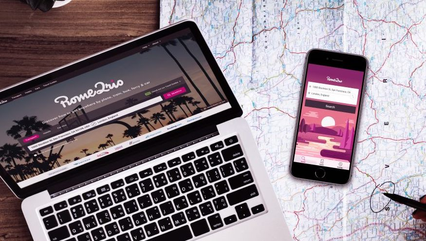
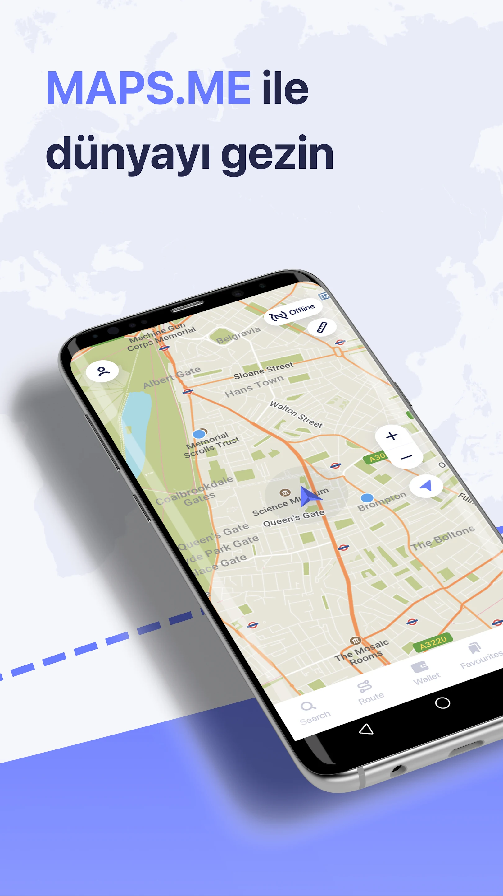
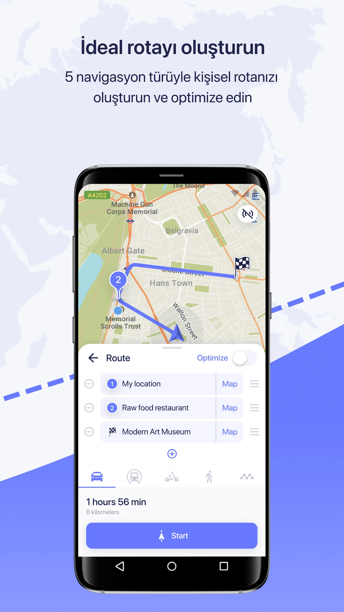

En Kullanışlı Yurt Dışı Seyahat Uygulamaları
İster uzun ister kısa olsun seyahat etmek her zaman için muhteşem bir seçenek. Uzak veya yakın fark etmeksizin geziye çıkmak ve küçük kaçamak tatiller yapmak size çok iyi gelebilir. Fakat bazen geziye gitmek gözünüzde büyüyebilir ya da bu süreçte sizi düşündüren pek çok etmen olabilir. Özellikle de yurt dışı gezilerinde aklınızı kurcalayan birkaç unsur geziye gitmeden önce sizi yorabilir. Ama yorulmadan ve gerilmeden pratik bir şekilde yurt dışı gezilerinizi yapabilirsiniz. Yurt dışı gezilerini uğraşmadan rahatlıkla yapabilmeniz için kullanabileceğiniz en güzel uygulamaları sizin için derledik.
1) Airalo
Yurt dışı tatillerinde en büyük sorun ülkenizdeki kişiler iletişim kurmak. Ülkenizin hattı ile yurt dışına çıktığınızda ve o hattı kullandığınızda oldukça yüklü bir faturayla karşılaşırsınız. Bu yüzden gideceğiniz ülke için özel bir hat almak, kullandığınız hattı yurt dışına açtırmak ve tekrar paket seçmek gibi uğraştırıcı seçenekler bulunuyor. Maliyetleri de yüksek olan bu işlemler özellikle de kısa süreli tatil yapacakların gözünü korkutabilir. Fakat artık çok daha uygun ve pratik çözümler bulunuyor.
Bu çözümler için kullanabileceğiniz çeşitli uygulamalar bulunuyor. Kullandığınız uygulamanın güvenilir olması ve gerçekten işe yaraması oldukça önemli. Sonu.ta yurt dışında iletişim kurmak için kullandığınız bir uygulama tarafından yarı yolda bırakılmak ya da çok yüklü paralar ödemek istemezsiniz. Kaliteli ve güvenilir uygulamalar arasından en çok kullanılan uygulama ise Airalo. Airalo ile yurt dışında telefonunuzu rahatlıkla kullanabilirsiniz. Sadece telefonunuza indirerek kullanmaya başlayabileceğiniz uygulamayı, telefona indirdikten sonra yapmanız gereken çok az şey var.
İlk olarak uygulamayı indirmeniz gerekiyor. Sonrasında adım adım gideceğiniz ülkeyi seçmeniz, gideceğiniz ülkede size uyan paketi seçmeniz gerekiyor. Ödemenizi yaptıktan sonra ise e-simi kurabilir ve ülkeye gittiğinizde kolayca etkinleştirebilirsiniz. 200’den fazla ülkede kullanabileceğiniz Airalo, gittiğiniz ülkede interneti kolayca kullanabilmenizi sağlar. İnternet üzerinden sesli veya görüntülü arama yapabilir, sevdiklerinize mesaj atabilir ve internet üzerinden istediğiniz her şeyi yapabilirsiniz.
2) Rebtel
Yurt dışı aramaları için en çok kullanılan uygulamalardan bir tanesi de Rebtel. Rebtel ile Airalo’nun farkı ise Airalo ile internet kullanabilirken Rebtel ile doğrudan arama yapabilirsiniz. Uygun fiyata yurt dışı ile görüşmeler yapabilmenizi sağlayan bu uygulamayı yine telefonunuza indirerek kullanmaya başlayabilirsiniz. Pek çok ülkede kullanılabilen Rebtel, internetten bağımsız bir şekilde kolayca arama yapabilirsiniz. Gideceğiniz ülkeden yurt dışı numarasını aradığınızda uygulama sizi kısa bir süre içinde yurt dışı numarasını bağlıyor.
Uygun fiyatlı ve uğraşmadan kullanabileceğiniz uygulamada telefonun bağlanmaması ya da kesilmesi gibi sorunlar neredeyse hiç olmuyor. Bu yüzden iletişimi neredeyse garantiye alan uygulamayı ister Türkiye’den yurt dışını isterseniz de yurt dışından Türkiye’yi arayabilirsiniz. Konuştuğunuz dakika başına ücretlendirme yapan uygulama diğer yurt dışı sim seçeneklerinden daha uygun ve pratik bir çözüm olarak karşımıza çıkıyor.
Kullanımı oldukça kolay olan ve kullanıcılarına güven veren Rebtel’i bütün işletim sistemleri ile kullanabilirsiniz. Rebtel ile ilgili daha ayrıntılı bilgiyi ve merak ettiklerinizi Rebtel internet sitesinden ya da uygulamayı indirerek öğrenebilir ve yurt dışı seyahatinizi daha kolay hale getirebilirsiniz.
3) Rome2Rio

Rome2Rio, gezginler tarafından en çok kullanılan uygulamalar arasında bulunuyor. 2021 yılından beri kullanılabilen uygulama yurt dışında pratik, uygun ve güvenli yolculuk yapmanızı sağlıyor. Uygulamayı kolayca telefonunuza indirdikten sonra kullanabileceğiniz uygulama gittiğiniz ülkede nasıl yolculuk yapacağınızdan en kolay nasıl gidebileceğinize kadar pek çok açıdan yol gösteriyor. Eğer yurt dışında bir şehirden diğer şehire gidecekseniz ve istediğiniz şehre ulaşmanın en uygun ve pratik yolunu arıyorsanız bu uygulamadan kolayca yararlanabilirsiniz.
Ulaşım için kullanabileceğiniz en uygun otobüs, tren, metro ve hatta uçak tercihlerini değerlendiren ve hangilerinin kullanabileceğiniz ile ilgili öneri yapan uygulamada fiyatları da karşılaştırabiliyorsunuz. Oldukça kolay kullanılabilen uygulama, yurt dışında rehbere ihtiyaç duymadan gezmenize olanak veriyor.
4) Maps.Me


Yurt dışı tatillerinde önemli olan bir unsur da haritalar. Gideceğiniz yerin çevrim dışı haritalarını edinmeniz oldukça önemli. Çevrim dışı internet için tabii ki de Google Maps’i kullanabilirsiniz. Fakat Maps.Me’nin sağladığı bazı farklı avantajları da bulunuyor.
Öncelikle uygulama Google Maps gibi çalışıyor. Önceden bir Wi-Fi’den gideceğiniz yerin haritasını indirmeniz gerekiyor. Böylece internetinizin olmadığı zamanlarda şehrin haritasını açarak bakabilirsiniz. Bunun yanında Maps.Me uygulaması şehirdeki restoranları, otelleri ve kafeleri bulmanıza yardımcı oluyor. Bu uygulamayı kullanmak için ise önceden uygulamayı ve haritayı indirmiş olmanız yeterli.
5) AccuWeather
Yolculuğunuz ve tatiliniz süresince hava durumunu takip etmek çok önemli. Yanlış bir hava durumu tahmini o gün için yaptığınız bütün planlarınızın iptal olmasına neden olabilir. Bu yüzden güvenilir ve ayrıntılı hava durumu veren bir uygulama tatiller içi çok önemli.
AccuWeather, güvenilir ve ayrıntılı hava durumu sunan en iyi uygulamalar arasında yer alıyor. 100’den fazla dil seçeneği olan uygulama saatlik ve anlık olarak hava durumunu takip etmenizi sağlıyor. Hem tatile gitmeden önce hem de tatil boyunca rahatlıkla kullanabileceğiniz bu uygulama ile tatilinizde istenmeyen sürprizlerle karşılaşmazsınız.